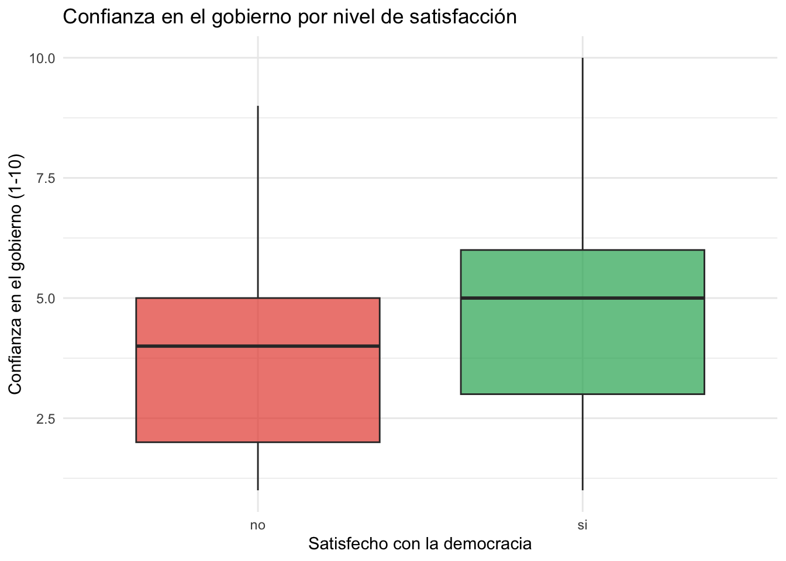
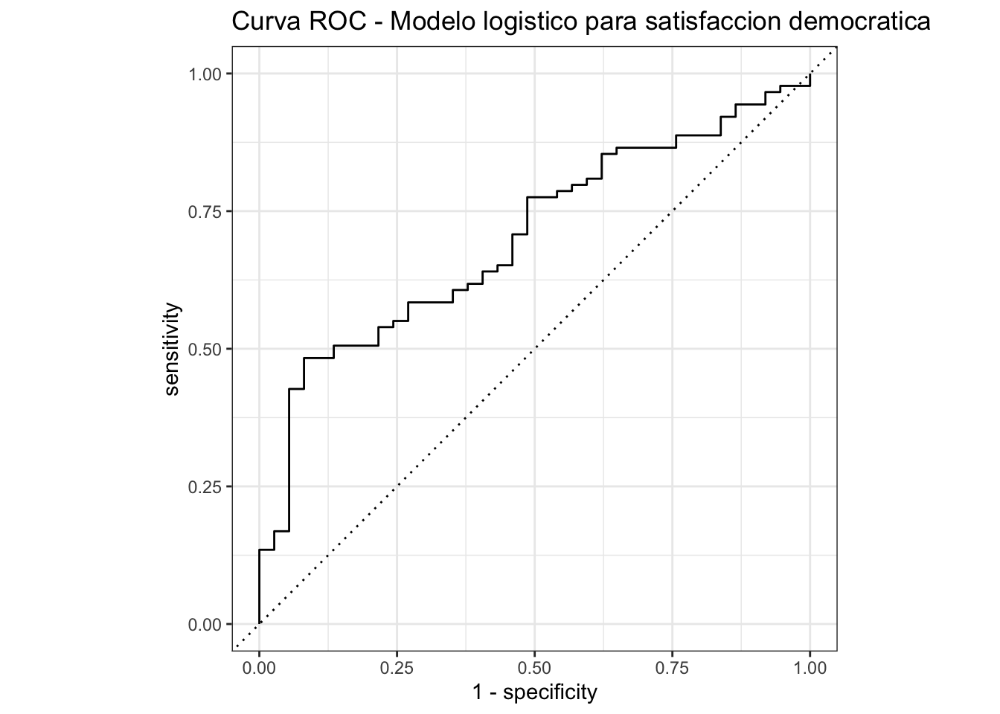

library(tidymodels)
library(tidyverse)
satisfaccion <- read_csv("datos/satisfaccion_democracia.csv")
satisfaccion <- satisfaccion |>
mutate(
satisfecho = factor(satisfecho, levels = c("no", "si")),
zona = factor(zona),
genero = factor(genero),
pais = factor(pais)
)Tarea 2: Comparación de modelos – Respuestas
IA para Científicos Sociales - UCU
1 Instrucciones
Esta es la clave de respuestas de la Tarea 2. Cada pregunta incluye el código R completo y una respuesta escrita.
1.1 Configuración
2 Exploración
2.1 Pregunta 1: Resumen del dataset
Calculen la proporción de satisfechos ("si") por país. Cuál país tiene la proporción más alta? Cuál tiene la más baja?
prop_pais <- satisfaccion |>
count(pais, satisfecho) |>
group_by(pais) |>
mutate(prop = round(n / sum(n), 3)) |>
filter(satisfecho == "si") |>
arrange(desc(prop))
prop_pais# A tibble: 18 × 4
# Groups: pais [18]
pais satisfecho n prop
<fct> <fct> <int> <dbl>
1 México si 17 0.895
2 El Salvador si 23 0.852
3 Honduras si 23 0.852
4 Costa Rica si 26 0.812
5 Brasil si 17 0.81
6 Ecuador si 12 0.8
7 Uruguay si 24 0.774
8 Paraguay si 16 0.696
9 Nicaragua si 22 0.688
10 Venezuela si 26 0.684
11 Argentina si 17 0.68
12 República Dominicana si 20 0.667
13 Colombia si 17 0.654
14 Perú si 17 0.654
15 Panamá si 24 0.632
16 Chile si 19 0.594
17 Bolivia si 16 0.571
18 Guatemala si 17 0.567Respuesta: La proporción de satisfechos varia entre países, lo cual refleja las diferencias en los factores subyacentes (confianza en el gobierno, educación, etc.) en cada país. Las diferencias entre países son en parte producto de la simulación aleatoria, pero se observa variabilidad que podría existir en datos reales de Latinobarometro.
2.2 Pregunta 2: Confianza y satisfacción
Creen un boxplot que muestre la distribución de confianza_gobierno separada por satisfecho.
ggplot(satisfaccion, aes(x = satisfecho, y = confianza_gobierno, fill = satisfecho)) +
geom_boxplot(alpha = 0.7) +
scale_fill_manual(values = c("#e74c3c", "#27ae60")) +
labs(
title = "Confianza en el gobierno por nivel de satisfaccion",
x = "Satisfecho con la democracia",
y = "Confianza en el gobierno (1-10)"
) +
theme_minimal() +
theme(legend.position = "none")
Respuesta: Los encuestados satisfechos con la democracia tienden a tener mayor confianza en el gobierno. La mediana de confianza es visiblemente más alta en el grupo satisfecho. Esto tiene sentido: quien confía más en el gobierno probablemente evalúa mejor el funcionamiento de la democracia.
2.3 Pregunta 3: Correlaciones
Calculen la matriz de correlaciones entre las 4 variables numéricas principales.
mat_cor <- satisfaccion |>
select(edad, educacion_anos, ingreso_hogar, confianza_gobierno) |>
cor() |>
round(3)
mat_cor edad educacion_anos ingreso_hogar confianza_gobierno
edad 1.000 0.012 0.030 -0.009
educacion_anos 0.012 1.000 -0.035 -0.077
ingreso_hogar 0.030 -0.035 1.000 -0.082
confianza_gobierno -0.009 -0.077 -0.082 1.000Respuesta: Las correlaciones entre estas variables son generalmente debiles (valores absolutos menores a 0.3). Esto indica que cada variable aporta información relativamente independiente, lo cual es bueno para un modelo de regresión: poca multicolinealidad. La correlación más alta probablemente es entre educacion_anos e ingreso_hogar, lo cual tiene sentido porque mayor educación se asocia con mayores ingresos.
3 Feature engineering
3.1 Pregunta 4: Crear variables nuevas
satisfaccion <- satisfaccion |>
mutate(
confianza_baja = if_else(confianza_gobierno <= 4, "si", "no"),
joven = if_else(edad < 30, "si", "no"),
ingreso_x_educacion = ingreso_hogar * educacion_anos
)
satisfaccion |>
select(satisfecho, confianza_baja, joven, ingreso_x_educacion) |>
head(10)# A tibble: 10 × 4
satisfecho confianza_baja joven ingreso_x_educacion
<fct> <chr> <chr> <dbl>
1 si no no 6960
2 si no no 19872
3 no no no 12270
4 si si no 2842
5 si no no 4648
6 no si no 3430
7 si no no 4466
8 si si si 13095
9 si no no 2660
10 no no no 45153.2 Pregunta 5: Explorar las nuevas variables
# Proporcion de satisfechos por confianza baja/alta
satisfaccion |>
count(confianza_baja, satisfecho) |>
group_by(confianza_baja) |>
mutate(prop = round(n / sum(n), 3)) |>
filter(satisfecho == "si")# A tibble: 2 × 4
# Groups: confianza_baja [2]
confianza_baja satisfecho n prop
<chr> <fct> <int> <dbl>
1 no si 194 0.808
2 si si 159 0.612# Proporcion de satisfechos entre jovenes vs. no jovenes
satisfaccion |>
count(joven, satisfecho) |>
group_by(joven) |>
mutate(prop = round(n / sum(n), 3)) |>
filter(satisfecho == "si")# A tibble: 2 × 4
# Groups: joven [2]
joven satisfecho n prop
<chr> <fct> <int> <dbl>
1 no si 283 0.711
2 si si 70 0.686Respuesta: La variable confianza_baja muestra una diferencia mucho mayor en la proporción de satisfechos que joven. Las personas con confianza baja en el gobierno tienen una proporción de satisfacción mucho menor que las de confianza alta. La edad, en cambio, muestra diferencias más modestas. Esto sugiere que confianza_baja sera un predictor más útil para el modelo.
4 Modelos
4.1 Pregunta 6: División de datos
set.seed(42)
datos_split <- initial_split(satisfaccion, prop = 0.75, strata = satisfecho)
datos_train <- training(datos_split)
datos_test <- testing(datos_split)
cat("Entrenamiento:", nrow(datos_train), "observaciones\n")Entrenamiento: 374 observacionescat("Prueba:", nrow(datos_test), "observaciones\n")Prueba: 126 observaciones# Verificar proporciones
cat("\nProporciones en entrenamiento:\n")
Proporciones en entrenamiento:datos_train |>
count(satisfecho) |>
mutate(prop = round(n / sum(n), 3))# A tibble: 2 × 3
satisfecho n prop
<fct> <int> <dbl>
1 no 110 0.294
2 si 264 0.706cat("\nProporciones en prueba:\n")
Proporciones en prueba:datos_test |>
count(satisfecho) |>
mutate(prop = round(n / sum(n), 3))# A tibble: 2 × 3
satisfecho n prop
<fct> <int> <dbl>
1 no 37 0.294
2 si 89 0.7064.2 Pregunta 7: Tres modelos con fórmula básica
# Definir modelos
modelo_logistico <- logistic_reg() |>
set_engine("glm") |>
set_mode("classification")
modelo_arbol <- decision_tree() |>
set_engine("rpart") |>
set_mode("classification")
modelo_knn <- nearest_neighbor(neighbors = 5) |>
set_engine("kknn") |>
set_mode("classification")
# Folds
set.seed(42)
folds <- vfold_cv(datos_train, v = 5, strata = satisfecho)
# Formula basica
formula_basica <- satisfecho ~ edad + educacion_anos + ingreso_hogar +
confianza_gobierno + consumo_noticias +
participacion_politica + zona
# Evaluar cada modelo
evaluar <- function(modelo, formula, folds, nombre) {
resultados <- fit_resamples(
modelo, formula, resamples = folds,
metrics = metric_set(accuracy),
control = control_resamples(event_level = "second")
)
collect_metrics(resultados) |> mutate(modelo = nombre)
}
eval_log <- evaluar(modelo_logistico, formula_basica, folds, "Logistico")
eval_arb <- evaluar(modelo_arbol, formula_basica, folds, "Arbol")
eval_knn <- evaluar(modelo_knn, formula_basica, folds, "KNN")
bind_rows(eval_log, eval_arb, eval_knn) |>
select(modelo, .metric, mean, std_err) |>
arrange(desc(mean))# A tibble: 3 × 4
modelo .metric mean std_err
<chr> <chr> <dbl> <dbl>
1 Logistico accuracy 0.706 0.0114
2 KNN accuracy 0.695 0.0332
3 Arbol accuracy 0.628 0.00898Respuesta: La regresión logística y el KNN suelen tener accuracy similar, mientras que el árbol de decisión tiende a ser ligeramente inferior. Las diferencias entre modelos son generalmente pequenas para este dataset, lo que indica que la relación entre predictores y outcome es razonablemente lineal (favoreciendo a la regresión logística).
4.3 Pregunta 8: Mejor modelo con fórmula extendida
# Formula extendida
formula_ext <- satisfecho ~ edad + educacion_anos + ingreso_hogar +
confianza_gobierno + consumo_noticias +
participacion_politica + zona +
confianza_baja + ingreso_x_educacion
# Evaluar el mejor modelo con formula extendida
eval_log_ext <- evaluar(modelo_logistico, formula_ext, folds, "Logistico (ext)")
# Comparar
cat("Accuracy formula basica:\n")Accuracy formula basica:eval_log |> select(modelo, mean, std_err)# A tibble: 1 × 3
modelo mean std_err
<chr> <dbl> <dbl>
1 Logistico 0.706 0.0114cat("\nAccuracy formula extendida:\n")
Accuracy formula extendida:eval_log_ext |> select(modelo, mean, std_err)# A tibble: 1 × 3
modelo mean std_err
<chr> <dbl> <dbl>
1 Logistico (ext) 0.722 0.00821cat("\nDiferencia:", round(eval_log_ext$mean - eval_log$mean, 4), "\n")
Diferencia: 0.016 Respuesta: La diferencia en accuracy entre la fórmula básica y la extendida es generalmente pequeña. Esto sugiere que las variables originales ya capturan la mayor parte de la información relevante. La variable confianza_baja es una versión discretizada de confianza_gobierno (que ya está en el modelo), por lo que no agrega información nueva. El producto ingreso_x_educacion podría capturar una interacción, pero su efecto es marginal.
5 Evaluación
5.1 Pregunta 9: Matriz de confusión
# Ajustar modelo logistico
ajuste <- modelo_logistico |>
fit(formula_basica, data = datos_train)
# Predicciones
pred_test <- ajuste |>
predict(datos_test) |>
bind_cols(datos_test)
# Matriz de confusion
mc <- conf_mat(pred_test, truth = satisfecho, estimate = .pred_class)
mc Truth
Prediction no si
no 5 5
si 32 84# Total de errores
tabla <- mc$table
errores <- tabla["si", "no"] + tabla["no", "si"]
cat("Total de errores:", errores, "de", nrow(datos_test), "observaciones\n")Total de errores: 37 de 126 observacionescat("Tasa de error:", round(errores / nrow(datos_test), 3), "\n")Tasa de error: 0.294 Respuesta: La matriz de confusión muestra que el modelo comete errores tanto de falsos positivos como de falsos negativos. El total de errores indica que el modelo clasifica correctamente la mayoría de las observaciones, aunque no es perfecto. Los errores son esperables dado que la satisfacción democrática depende de muchos factores que no están en el modelo.
5.2 Pregunta 10: Precisión, recall y AUC
# Agregar probabilidades
pred_probs <- ajuste |>
predict(datos_test, type = "prob") |>
bind_cols(predict(ajuste, datos_test)) |>
bind_cols(datos_test)
# Precision
prec <- pred_probs |>
precision(truth = satisfecho, estimate = .pred_class,
event_level = "second")
# Recall
rec <- pred_probs |>
recall(truth = satisfecho, estimate = .pred_class,
event_level = "second")
# AUC
auc <- pred_probs |>
roc_auc(truth = satisfecho, .pred_si, event_level = "second")
cat("Precision:", round(prec$.estimate, 3), "\n")Precision: 0.724 cat("Recall:", round(rec$.estimate, 3), "\n")Recall: 0.944 cat("AUC:", round(auc$.estimate, 3), "\n")AUC: 0.701 Respuesta: El AUC permite evaluar la capacidad discriminativa del modelo. Un AUC entre 0.70 y 0.80 se considera aceptable, entre 0.80 y 0.90 bueno, y superior a 0.90 excelente. Para un modelo con variables sociodemograficas como las nuestras, un AUC en el rango aceptable-bueno es un resultado razonable, dado que la satisfacción democrática es un fenómeno complejo que depende de muchos factores no observados.
5.3 Pregunta 11: Curva ROC
roc_data <- pred_probs |>
roc_curve(truth = satisfecho, .pred_si, event_level = "second")
autoplot(roc_data) +
labs(title = "Curva ROC - Modelo logistico para satisfaccion democratica")
5.4 Pregunta 12: Coeficientes del modelo
coefs <- tidy(ajuste) |>
mutate(odds_ratio = round(exp(estimate), 3)) |>
arrange(p.value)
coefs |>
select(term, estimate, std.error, p.value, odds_ratio)# A tibble: 8 × 5
term estimate std.error p.value odds_ratio
<chr> <dbl> <dbl> <dbl> <dbl>
1 confianza_gobierno 0.256 0.0611 0.0000281 1.29
2 participacion_politica 0.0178 0.00543 0.00103 1.02
3 (Intercept) -1.58 0.658 0.0164 0.206
4 zonaurbano 0.545 0.257 0.0341 1.72
5 edad 0.0144 0.00847 0.0895 1.01
6 consumo_noticias 0.0354 0.0226 0.118 1.04
7 ingreso_hogar -0.000199 0.000159 0.212 1
8 educacion_anos -0.0329 0.0305 0.281 0.968Respuesta: La variable con el efecto más fuerte es confianza_gobierno, con un odds ratio que indica un aumento considerable en las chances de satisfacción por cada punto adicional de confianza. Las variables con efectos más debiles (p-valores altos) son las que tienen menos relación con la satisfacción democrática. El orden de importancia de los predictores tiene sentido teórico: la confianza en el gobierno es el predictor más directo de la satisfacción con la democracia.
6 Reflexion
6.1 Pregunta 13: Árbol vs. logística
Respuesta: La regresión logística y los árboles de decisión tienen fortalezas complementarias:
Regresión logística:
- Mejor cuando la relación entre predictores y outcome es aproximadamente lineal (en la escala logit)
- Produce coeficientes interpretables: cada variable tiene un odds ratio que se puede comunicar a audiencias no técnicas
- Tiende a generalizar mejor cuando hay pocos datos, porque tiene menos parámetros
- Preferible cuando el objetivo es entender qué factores influyen y en qué dirección
Árbol de decisión:
- Captura relaciones no lineales e interacciones de forma automática, sin necesidad de especificarlas
- Muy facil de interpretar visualmente: se puede mostrar el árbol completo
- Funciona bien con variables categoricas sin necesidad de crear dummies
- Preferible cuando la estructura de los datos es jerárquica (por ejemplo, la edad importa solo para personas con baja educación)
En este laboratorio, la regresión logística funciona igual o mejor que el árbol porque la relación entre los predictores y la satisfacción es aproximadamente lineal. El árbol tiene a sobreajustar (cortes arbitrarios) con datasets de este tamaño. Para un organismo que necesita recomendaciones claras de política, la regresión logística es preferible porque los coeficientes indican directamente qué factores modificar.